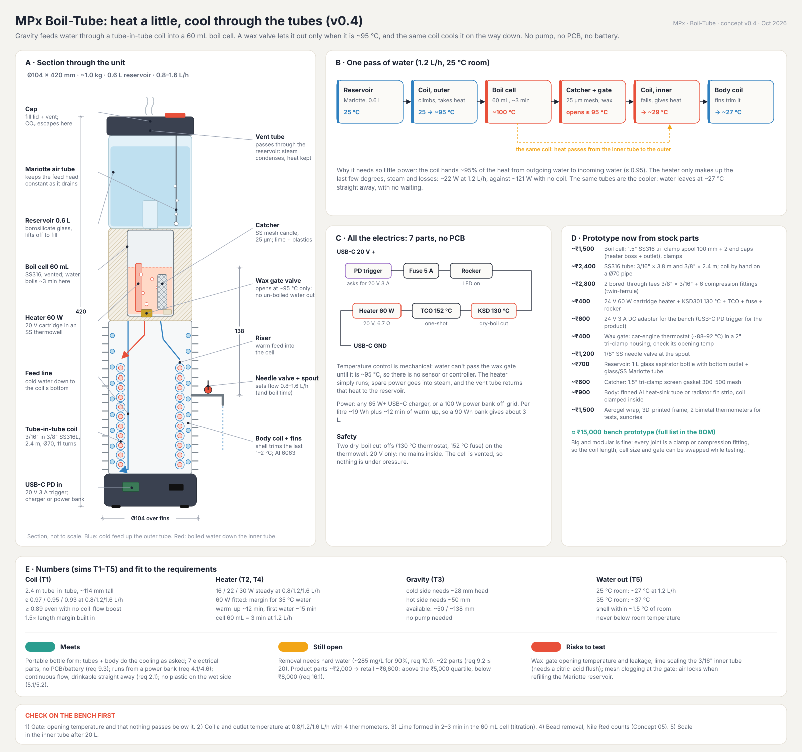
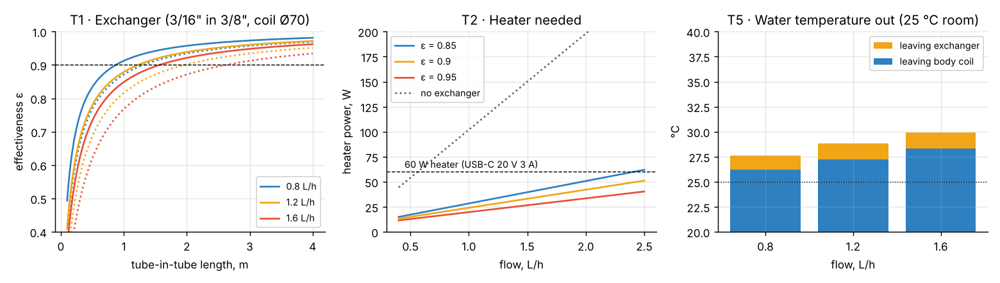
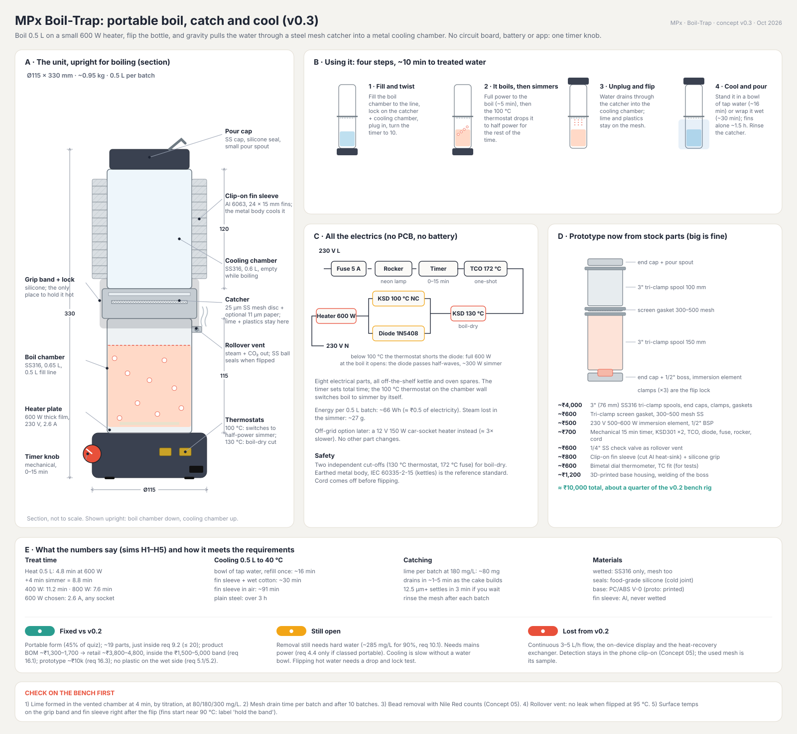
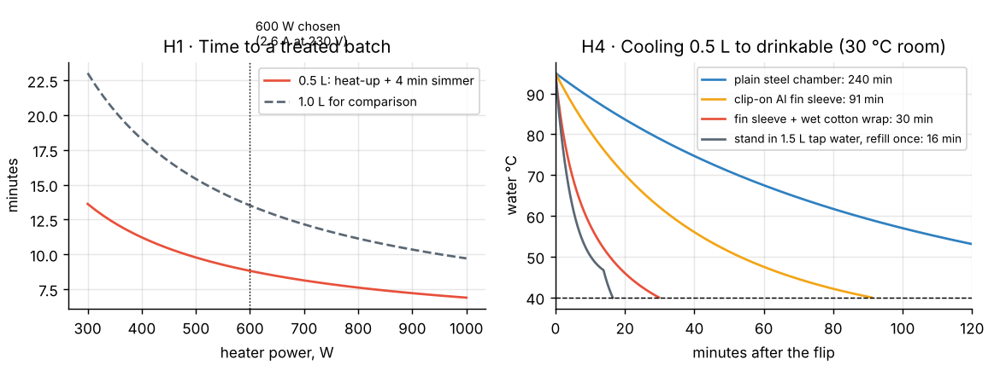

Five versions, one idea
Each version answered a question the previous one raised: can it be portable, can it skip the electronics, can gravity replace the pump, and what does the smallest working loop cost in flow.
Pumped loop, vacuum core, finned shell as the radiator, ~80 % exchanger.
v0.2Boil-Loop GA3–5 L/h on 100 W USB-C with a 99 Wh battery; 4.1 m exchanger, full simulation set.
v0.3Boil-TrapBatch: boil 0.5 L on 600 W mains, flip, drain through the catcher. No PCB.
v0.4Boil-TubeGravity Mariotte feed, 60 mL boil cell, wax gate opens at 95 °C. 0.8–1.6 L/h.
v0.5Boil-Loop MiniPump back in, 60 W USB-C, lime-trap drawer, 8-sheet drawing set and FMEA.
Why boiling removes microplastics
When water boils with a vent, CO₂ leaves and dissolved calcium bicarbonate turns into calcium carbonate. The crystals nucleate on particles in the water, microplastics included, and the crusted particles are big enough to catch on a 25 µm steel mesh while the water is still hot (so the lime cannot re-dissolve).
Removal depends on how hard the water is
Venting the CO₂ is what makes the lime
Boil-Loop Mini v0.5
The same loop as v0.1, bottle-sized: a 60 W heater and one pump straight off USB-C, and no circuit board, battery, valve or sensor.
- Jug0.5 L borosilicate, untreated water in.
- PumpPeristaltic, runs off 20 V directly, ~20 mL/min.
- Exchanger, cold side3/16″ in 3/8″ 316L, 2.4 m; incoming water heats to ~95 °C.
- Mini-tube heater1/8″ coil in an Al block, 60 W: 95 → 100 °C.
- Boil coil + vent½″ tube, ≈ 60 mL: ~3 min at the boil; CO₂ and steam out of the standpipe.
- Lime trap + wax gate25 µm mesh; the gate stays shut below ~95 °C.
- Exchanger hot side + body coilHands ~95 % of the heat back; fins trim the last 1–2 °C.
- Spout~27 °C in a 25 °C room.


Cutaway bench · Fig 1
What you can do
- Switch on and watch the run from cold (Space runs / pauses)
- Refill the jug
- Set flow, hardness and room temperature
- Try the proposed pump thermostat fix
- Hover a part to read its live temperature and state; set sim speed (3 min / s)
What it reads out
- Temperatures at all 8 stations along the water's path
- Warm-up, overflow and producing phases
- Heater power split (sensible, steam, losses)
- Lime formed and removal at the set hardness
The model behind it
A counterflow tube-in-tube exchanger (ε–NTU, laminar flow with Dean enhancement in the coil, ε ≈ 0.95 at 1.2 L/h), a 60 W heater that only tops up the last few degrees plus 1.5 % steam and losses, three minutes at the boil in a vented 61 mL coil, and the body coil trimming the last degrees into the finned shell. Lime comes from a PHREEQC run of vented boiling (≈ hardness − 20 mg/L as CaCO₃) and microplastic removal from Yu et al. 2024 (1 − e^(−0.0086·lime)). The run is a lumped transient from switch-on: the gate stays shut until the core reaches 95 °C, and until then the boil coil overflows through the standpipe back into the jug.
What the Mini v0.5 bench showed
Power needed vs flow
Boil time and outlet temperature vs flow
Steady state at 1.2 L/h
| Room / inlet | Sensible W | Steam W | Losses W | Total W | No exchanger W | Outlet °C | Shell °C |
|---|---|---|---|---|---|---|---|
| 25 °C | 5.3 | 11.3 | 6.0 | 22.5 | 121 | 27.1 | 26.8 |
| 35 °C | 4.6 | 11.3 | 5.2 | 21.0 | 106 | 36.8 | 36.5 |
Boil-Loop Mini v0.5 against the 22 technical requirements
| Rank | Req. | Requirement | Result | Evidence | Status |
|---|---|---|---|---|---|
| 1 | 6.1 | Removal ≥ 90 % by count, 1 µm–5 mm (stretch 99 %) | 90 % at 285 mg/L; about 40 % at 80 mg/L; 25 µm mesh catches the crust | Sim | partial |
| 2 | 3.2 | Filter medium sheds no secondary micro/nanoplastic | Steel mesh and tubes; but the PharMed pump tube wears in the water path | Design | risk |
| 3 | 6.2 | Detection false +/− ≤ 10 % vs reference microscopy | No detection in this concept; would pair with C05 | — | n/a |
| 4 | 10.2 | Captured microplastics stay contained | Lime crust in the drawer; rinsing it into a sink releases it | Design | risk |
| 5 | 4.1 | Result through ≥ 1 user feedback channel | Dial thermometer only; no microplastic information | Design | fail |
| 6 | 11.1 | Retail price ₹1,500–6,000 | v0.5 not costed; v0.4 BOM implied ₹6,650 retail, v0.5 adds a pump | BOM | risk |
| 7 | 3.1 | Water-contact parts food-contact safe | 316L, borosilicate, FDA silicone, PharMed tube | Spec | by design |
| 7 | 3.4 | No leachables above IS 10500 | 316L at 100 °C plus citric descale; not tested | Spec | by design |
| 9 | 2.1 | Flow rate ≥ 15 L/h | 1.2 L/h (0.45–0.84 L/h including warm-up) | Sim | fail |
| 9 | 1.1 | Per-use capacity for 1–3 L/day | 3 L takes about 2.5 h and six refills of the 0.5 L jug | Sim | partial |
| 9 | 10.1 | Disposal pathway for spent filters (W) | Steel mesh is reusable; lime + plastic catch has no defined route | — | open |
| 9 | 1.2 | Non-destructive sampling (W) | Drawer catch can be sampled, but the plastic is locked in lime | Design | partial |
| 9 | 5.3 | Display legible outdoors (W) | No display; dial thermometer | — | n/a |
| 14 | 9.1 | Filter rated ≥ 100 L or 3 months | Mesh reusable; cartridge clogging and tube scaling not modelled | — | open |
| 14 | 7.1 | Filter swap tool-free in ≤ 30 s | Twist-out drawer; not timed | Design | by design |
| 14 | 4.2 | Alert near filter end-of-life | None | Design | fail |
| 14 | 5.2 | Spout parts detachable and washable | Spout is a fixed steel tube | Design | fail |
| 14 | 8.2 | Usable at 5–45 °C | Steady outlet = room + 2 °C; shell stays near room temperature | Sim | pass |
| 19 | 3.3 | Housing UV and impact resistant (W) | Aluminium shell; glass jug on top | Design | partial |
| 19 | 3.5 | Survives 1 m drop (W) | 2.7 kg with a glass jug; not tested | — | risk |
| 21 | 5.1 | Actuation force ≤ 50 N (W) | No manual actuation | Design | met |
| 21 | 8.1 | Noise ≤ 60 dB(A) (W) | Peristaltic pump + boiling; not measured | — | open |
Design FMEA · Boil-Loop Mini v0.5
20 failure modes. Highest RN 448 → 105; critical 11 → 0.
| # | Part / function | Failure mode | Effect on the user | Cause | Current control | O | S | D | RN | Recommended action | O′ | S′ | D′ | New RN | Req. |
|---|---|---|---|---|---|---|---|---|---|---|---|---|---|---|---|
| 1 | Water chemistry | Removal collapses in soft water | User thinks the water is clean; 25–40 % removed | Target water below ~150 mg/L hardness | Note on the concept sheet | 7 | 8 | 8 | 448 | Hardness strip in the box; show expected removal per hardness; test a calcium-dosing cartridge | 4 | 8 | 3 | 96 | 6.1 |
| 2 | Drawer rinse | Caught crust rinsed into the sink | Microplastics go back to the environment | Twist-out drawer is rinsed under a tap | None | 8 | 6 | 8 | 384 | Dissolve the crust in citric acid in a cup, filter on paper, dry and bin | 3 | 6 | 4 | 72 | 10.2 |
| 3 | Pump tube (PharMed) | Tube wear sheds particles | The purifier adds polymer particles | Rollers abrade the tube every turn; spallation | Pump on the cold side | 6 | 7 | 8 | 336 | Steel diaphragm or gear pump, or gravity feed (v0.4); blank-water shedding test | 3 | 7 | 5 | 105 | 3.2 |
| 4 | Mini tubes and boil coil | Lime scales the walls | Flow drops, heater overheats, pump stalls | The same lime that traps plastic deposits on hot walls | None | 8 | 6 | 6 | 288 | Automatic citric-acid descale cycle; smooth 316L; pressure check on the pump | 4 | 6 | 4 | 96 | 9.1 |
| 5 | Boil dwell | Too little time at the boil | Less lime forms, removal falls | Flow set high; scale shrinks coil volume | Fixed pump speed | 5 | 7 | 7 | 245 | Lock flow at ≤ 1.2 L/h; dwell test at 2/4/6 min | 3 | 7 | 5 | 105 | 6.1 |
| 6 | Wax gate | Sticks open | Unboiled water reaches the spout | Wax actuator failure; lime on the seat | None | 3 | 8 | 8 | 192 | Gate after the mesh, away from lime; cycle test; dial check in the manual | 2 | 8 | 5 | 80 | 6.1 |
| 7 | Tube joints (30+ fittings) | Hot leak | Hot water in the base near electrics | Thermal cycling of compression fittings | 20 kPa leak test | 5 | 7 | 5 | 175 | Brazed joints in production; drip path away from electrics | 2 | 7 | 4 | 56 | 3.5 |
| 8 | Tubes between runs | Stagnant water grows biofilm | Odour; first water from the cold side not boiled | Tubes stay primed between uses | Next run boils it | 5 | 5 | 6 | 150 | Drain mode; first 60 mL to waste | 3 | 5 | 3 | 45 | 3.1 |
| 9 | 316L at 100 °C | Metal leaching after descale | Ni/Cr above IS 10500 | Acid descale, weld tint, poor passivation | 316L | 3 | 8 | 6 | 144 | Passivate after descale; leach test after 20 cycles | 1 | 8 | 4 | 32 | 3.4 |
| 10 | Lime-trap cartridge | Mesh clogs | Back-pressure, overflow, no output | ~0.13 g of lime per jug at 285 mg/L | Twist-out rinse | 7 | 5 | 4 | 140 | Size the cartridge for a week; overflow is the visible cue | 4 | 5 | 3 | 60 | 9.1 |
| 11 | Mini-tube heater | Steam bursts in the 1/8″ coil | Hot water spurts from the vent or spout | Boiling in a 3 mm tube | Boil only in the vented coil | 4 | 8 | 4 | 128 | Cap heater-coil outlet at ~98 °C; vent splash guard | 2 | 8 | 3 | 48 | — |
| 12 | Vent and cap | Steam on the hand | Scald when lifting the jug | Vent standpipe exits at the top | Insulated core | 4 | 8 | 3 | 96 | Vent shield; cool-touch cap | 2 | 8 | 3 | 48 | — |
| 13 | Power bank use | Runs out early | Only ~0.7 L per 90 Wh | Warm-up energy | None | 8 | 4 | 3 | 96 | Pump thermostat (~1.2 L); market as mains USB-C | 5 | 4 | 3 | 60 | 1.1 |
| 14 | Warm-up overflow | Jug heats; first water late and hot | 38 min wait; 45 °C out | Overflow returns ~100 °C water to the jug | None | 9 | 5 | 2 | 90 | KSD301 98 °C pump thermostat: 9 min, 27 °C | 2 | 5 | 2 | 20 | 8.2 |
| 15 | Dial thermometer | Reads high or drifts | User trusts unboiled water | Bimetal drift | None | 3 | 5 | 6 | 90 | Calibrate at the boil; gate is the real safeguard | 2 | 5 | 4 | 40 | 4.1 |
| 16 | Heater, jug empty | Dry boil | Smell; scale baked on | Pump keeps running dry | 130 °C KSD301 + 152 °C TCO | 8 | 4 | 2 | 64 | Pump stops with the heater cut-off | 4 | 4 | 2 | 32 | — |
| 17 | USB-C supply | Under-powered charger | Never reaches the boil; no water | 45 W charger or PD at 15 V | 20 V PD trigger | 5 | 4 | 3 | 60 | LED for 20 V; 65 W on the box | 2 | 4 | 2 | 16 | — |
| 18 | Glass jug | Breaks | Cuts, spill | Drop, knock | Borosilicate 3.3 | 4 | 7 | 2 | 56 | Steel jug option with a sight window | 2 | 7 | 2 | 28 | 3.5 |
| 19 | Flow | 1.2 L/h for a household | Too slow for daily use | 3 min dwell, 60 W heater | None | 10 | 5 | 1 | 50 | Not fixable within the concept; reposition as a slow batch purifier | 10 | 5 | 1 | 50 | 2.1 |
| 20 | Whole unit | Tips over while hot | Hot spill | 388 mm tall on a 170 × 120 base | None | 3 | 7 | 2 | 42 | Wider base; tilt switch on the heater | 2 | 7 | 2 | 28 | 3.5 |
Drawing set · v0.5
A3, first-angle (IS/ISO), mm, ISO 2768-m. All views generated from one dimension file so the sheets and the CAD agree. Preliminary, not for manufacture.


Design review · Boil-Loop Mini v0.5
Boil-Tube v0.4 · heat a little, cool through the tubes
Gravity feeds water through a tube-in-tube coil into a 60 mL boil cell. A wax valve lets it out only when it is ~95 °C, and the same coil cools it on the way down. No pump, no PCB, no battery: seven electrical parts.




Heater power budget (W)
| Flow | Sensible | Steam | Losses | Total | Total without Dean effect | No exchanger | Exchanger ε |
|---|---|---|---|---|---|---|---|
| 0.8 L/h | 2.4 | 7.5 | 6.0 | 15.9 | 17.2 | 82.8 | 0.965 |
| 1.2 L/h | 5.3 | 11.3 | 6.0 | 22.5 | 25.8 | 121.2 | 0.949 |
| 1.6 L/h | 9.1 | 15.0 | 6.0 | 30.1 | 36.1 | 159.6 | 0.934 |
Temperatures through the unit (°C)
| Case | After exchanger | Outlet | Shell | Body coil W |
|---|---|---|---|---|
| 25C room, 0.8 L/h | 27.6 | 26.2 | 25.9 | 1.3 |
| 25C room, 1.2 L/h | 28.8 | 27.2 | 26.5 | 2.1 |
| 25C room, 1.6 L/h | 29.9 | 28.3 | 27.1 | 3.0 |
| 35C room, 0.8 L/h | 37.2 | 36.0 | 35.8 | 1.1 |
| 35C room, 1.2 L/h | 38.3 | 36.9 | 36.3 | 1.9 |
| 35C room, 1.6 L/h | 39.2 | 37.8 | 36.8 | 2.6 |
Coil: 2.4 m, 10.9 turns, 114 mm tall. Warm-up 12.1 min at 60 W; first water after 15.1 min. Mariotte head: cold side 28 mm, hot side 50 mm at 1.6 L/h.
Boil-Tube v0.4 · parts list (prototype now, product later)
Boil-Trap v0.3 · portable boil, catch and cool
Boil 0.5 L on a small 600 W heater, flip the bottle, and gravity pulls the water through a steel mesh catcher into a metal cooling chamber. No circuit board, battery or app: one timer knob, and a 100 °C thermostat that drops the heater to half power through a diode once it boils.




Heater size vs batch time (0.5 L)
| Heater | Heat (min) | Total (min) | Steam lost (g) | Wh / batch | A at 230 V |
|---|---|---|---|---|---|
| 400 W | 7.2 | 11.2 | 17 | 59 | 1.74 |
| 600 W | 4.8 | 8.8 | 27 | 66 | 2.61 |
| 800 W | 3.6 | 7.6 | 37 | 72 | 3.48 |
Settling: smallest particle that settles fully
| Rest time | Diameter |
|---|---|
| 1 min | 21.6 µm |
| 2 min | 15.3 µm |
| 3 min | 12.5 µm |
| 5 min | 9.7 µm |
Cooling to 40 °C
| Method | Minutes | Water used (mL) |
|---|---|---|
| plain steel chamber | 240 | 0 |
| clip-on Al fin sleeve | 91 | 0 |
| fin sleeve + wet cotton wrap | 30 | 37 |
| stand in 1.5 L tap water, refill once | 16 | 0 |
Catcher: 23.8 cm² of 25 µm mesh, clean drain 72 s; ~80 mg lime per batch at 180 mg/L. drain time scales with how much lime reaches the mesh; measure on the bench.
Boil-Trap v0.3 · parts list
Boil-Loop v0.1–v0.2 · boil, trap, filter, cool through the body
The original idea: water pumped through thin steel tubes, held at a boil so lime crusts the microplastics, filtered while hot, then cooled by a heat exchanger and a coil pressed into the finned metal body. The body is the radiator.


3D model · Boil-Loop v0.1
What you can do
- Orbit (drag) and zoom (scroll)
- Cutaway, X-ray or closed view
- Pause the flow or play the guided tour
- Click a step to follow the water
What it reads out
- Temperature colour along the route, 25 → 100 °C
- Each station's temperature
The model behind it
Schematic model, not to scale: about 11 cm across and 30 cm tall. Temperatures assume 25 °C tap water, ~20 mL/min and an exchanger that recovers 80 % of the heat.
Boil-Loop v0.2 · sheets and simulations
Sized for 3–5 L/h on a 100 W USB-C supply with a 99 Wh battery.


Simulation figures S1–S7


Power budget (W)
| Flow | Sensible | Steam | Losses | Parasitic | Total | No exchanger |
|---|---|---|---|---|---|---|
| 3 L/h | 11.2 | 8.4 | 18.9 | 5.0 | 43.5 | 291.4 |
| 4 L/h | 19.0 | 11.2 | 18.9 | 5.0 | 54.2 | 380.5 |
| 5 L/h | 28.5 | 14.1 | 18.9 | 5.0 | 66.4 | 469.7 |
13.5 Wh per litre at 4 L/h against 97 Wh/L for boiling in a kettle. First water after 16.8 min; one run uses 55 Wh of battery (11 Wh when on USB power). Outlet 28.2 °C at 4 L/h in a 25 °C room.
Separation scenarios (settling + filter life in litres, by cake resistance m/kg)
| Particle size scenario | Settled | α = 1e+10 | α = 5e+10 | α = 2e+11 |
|---|---|---|---|---|
| optimistic d50=15 um | 99.6 % | 168,437 | 33,687 | 8,422 |
| middle d50=6 um | 92.7 % | 8,612 | 1,722 | 431 |
| pessimistic d50=2 um | 51.6 % | 1,300 | 260 | 65 |